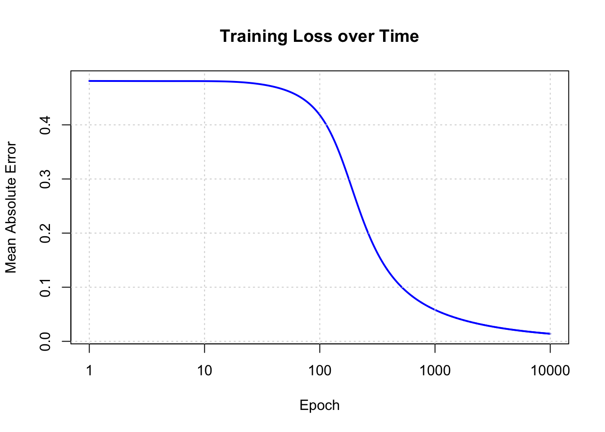

Code
# Sigmoid activation and its derivative
sigmoid <- function(x) {
1 / (1 + exp(-x))
}
sigmoid_derivative <- function(x) {
x * (1 - x)
}In this tutorial, we’ll build a simple neural network from scratch in R — no deep learning libraries, only base R.
The goal is to learn the XOR function, a classic example that requires a nonlinear model to solve.
| x1 | x2 | y |
|---|---|---|
| 0 | 0 | 0 |
| 0 | 1 | 1 |
| 1 | 0 | 1 |
| 1 | 1 | 0 |
We’ll define the sigmoid activation function and its derivative for backpropagation.
# Sigmoid activation and its derivative
sigmoid <- function(x) {
1 / (1 + exp(-x))
}
sigmoid_derivative <- function(x) {
x * (1 - x)
}We’ll use the XOR truth table as input and output matrices.
# XOR input and output
X <- matrix(c(0,0,
0,1), nrow = 2, byrow = TRUE)
y <- matrix(c(0, 1), nrow = 2)
print(X) [,1] [,2]
[1,] 0 0
[2,] 0 1🧩 Initialize the Network
We define the architecture, hyperparameters, and initialize weights randomly.
set.seed(50)
input_neurons <- 2
hidden_neurons <- 2
output_neurons <- 1
learning_rate <- 0.5
# Initialize weights and biases
W1 <- matrix(runif(input_neurons * hidden_neurons), nrow = input_neurons) ## between -1 and 1
b1 <- matrix(runif(hidden_neurons), nrow = 1)
W2 <- matrix(runif(hidden_neurons * output_neurons), nrow = hidden_neurons)
b2 <- matrix(runif(output_neurons), nrow = 1)
print(W1) [,1] [,2]
[1,] 0.7087271 0.2000049
[2,] 0.4376599 0.7670660print(b1) [,1] [,2]
[1,] 0.5131619 0.04470388print(W2) [,1]
[1,] 0.6999128
[2,] 0.6463436print(b2) [,1]
[1,] 0.04202962🔁 Training the Network
We train using forward propagation, error computation, and backpropagation.
epochs <- 10000
losses <- numeric(epochs)
for (i in 1:epochs) {
# Forward pass
z1 <- X %*% W1 + matrix(rep(b1, each = nrow(X)), nrow = nrow(X))
a1 <- sigmoid(z1)
z2 <- a1 %*% W2 + matrix(rep(b2, each = nrow(a1)), nrow = nrow(a1))
a2 <- sigmoid(z2)
# Compute error
error <- y - a2
losses[i] <- mean(abs(error))
# Backpropagation
d_output <- error * sigmoid_derivative(a2)
d_hidden <- (d_output %*% t(W2)) * sigmoid_derivative(a1)
# Update weights and biases
W2 <- W2 + t(a1) %*% d_output * learning_rate
b2 <- b2 + colSums(d_output) * learning_rate
W1 <- W1 + t(X) %*% d_hidden * learning_rate
b1 <- b1 + colSums(d_hidden) * learning_rate
# Print loss occasionally
if (i==1) cat("Initial","\n")
if (i==1) cat("X0 ",sprintf("%+.2f",X),"\n")
if (i<3 ) cat("W1 ",sprintf("%+.2f", W1),"\n")
if (i<3 ) cat("X %*% W1", sprintf("%+.2f",X %*% W1),"\n")
if (i<3 )
for (j in 1:ncol(W1)) {
for (i in 1:nrow(X)) {
terms <- paste(paste0(round(X[i, ],2), "*", round(W1[, j],2)), collapse = "+")
cat(" ", terms)
}
}
cat("\n" )
if (i<3) cat("b1 " , matrix(rep(sprintf("%+.2f",b1), each = nrow(X)), nrow = nrow(X)),"\n")
if (i<3) cat("z1 ",sprintf("%+.2f",z1),"\n")
if (i<3) cat("a1 ",sprintf("%+.2f",a1),"\n")
if (i<3) cat("W2 ",sprintf("%+.2f", W2),"\n")
if (i<3 ) cat("a1 %*%W2", sprintf("%+.2f",a1 %*% W2),"\n")
if (i<3 )
for (j in 1:ncol(W2)) {
for (i in 1:nrow(a1)) {
terms <- paste(paste0(round(a1[i, ],2), "*", round(W2[, j],2)), collapse = "+")
cat(" ", terms)
}
}
cat("\n" )
if (i<3) cat("b2 " , matrix(rep(sprintf("%+.2f",b2), each = nrow(X)), nrow = nrow(X)),"\n")
if (i<3) cat("z2 ",sprintf("%+.2f",z2),"\n")
if (i<3) cat("a2 ",sprintf("%+.2f",a2),"\n")
}Initial
X0 +0.00 +0.00 +0.00 +1.00
W1 +0.71 +0.44 +0.20 +0.77
X %*% W1 +0.00 +0.44 +0.00 +0.77
0*0.71+0*0.44 0*0.71+1*0.44 0*0.2+0*0.77 0*0.2+1*0.77
b1 +0.50 +0.50 +0.04 +0.04
z1 +0.51 +0.95 +0.04 +0.81
a1 +0.63 +0.72 +0.51 +0.69
W2 +0.67 +0.63
a1 %*%W2 +0.74 +0.92
0.63*0.67+0.51*0.63 0.72*0.67+0.69*0.63
b2 -0.01 -0.01
z2 +0.81 +0.99
a2 +0.69 +0.73
W1 +0.71 +0.45 +0.20 +0.77
X %*% W1 +0.00 +0.45 +0.00 +0.77
0*0.71+0*0.45 0*0.71+1*0.45 0*0.2+0*0.77 0*0.2+1*0.77
b1 +0.50 +0.50 +0.03 +0.03
z1 +0.50 +0.95 +0.04 +0.81
a1 +0.62 +0.72 +0.51 +0.69
W2 +0.65 +0.61
a1 %*%W2 +0.71 +0.89
0.62*0.65+0.51*0.61 0.72*0.65+0.69*0.61
b2 -0.05 -0.05
z2 +0.73 +0.91
a2 +0.68 +0.71 📉 Visualizing the Training Loss
We can plot the loss curve to see the model improving over time.
plot( losses[1:10000], type = "l", col = "blue", lwd = 2,
xlab = "Epoch", ylab = "Mean Absolute Error",
main = "Training Loss over Time", log = "x")
grid()
✅ Results
After training, let’s check the predictions versus expected outputs.
cat("\nFinal Predictions:\n")
Final Predictions:print(round(a2, 3)) [,1]
[1,] 0.016
[2,] 0.988cat("\nExpected Output:\n")
Expected Output:print(y) [,1]
[1,] 0
[2,] 1You should see predictions close to [0, 1, 1, 0], showing that the network successfully learned XOR.
We’re multiplying two matrices:
[ X = \[\begin{bmatrix} 0 & 0 \\ 0 & 1 \end{bmatrix}\] , W = \[\begin{bmatrix} 1 \\ 1 \end{bmatrix}\]]
We can compute the matrix product:
[ X %*% W = \[\begin{bmatrix} 0*1 + 0*1 \\ 0*1 + 1*1 \end{bmatrix}\] = \[\begin{bmatrix} 0 \\ 1 \end{bmatrix}\]]